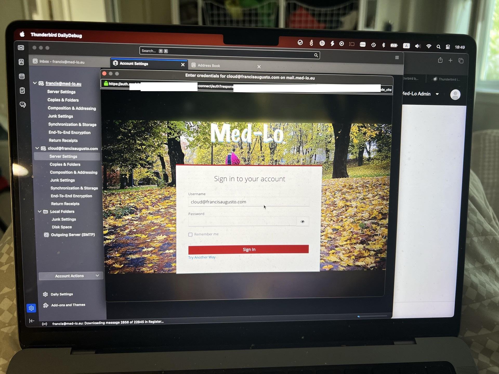

There’s something rotten in the world of e-mail.
You see, if we come back twenty-five years ago, e-mail was handled in-house by companies or by your local ISP. People did have their hotmail or yahoo accounts, but you’d always get one from your ISP.
Then companies like Google started to host e-mail for companies, but it was still possible to run your own e-mail server. Heck, it is still is.
But a certain challenge came in: multi-factor authentication. Today, MFA or 2FA are absolute requirements for any authentication, and e-mail is not an exception.
Suddenly, it got hard to use plain username/password login for IMAP and SMTP, the most widely used e-mail protocols if the goal was to have 2FA. The alternatives would be adding 2FA to a password, but that would prompt the user every now and then to reenter the password with the OTP.
That’s why over the last few years the big providers moved for OAuth2 authentication: the user credentials in form of username/password aren’t sent to the e-mail server anymore: the user is redirect to a browser, then he authenticates on his IdP (Identity Provider), get a token which is then sent to the e-mail server.
Luckily, some of the most popular e-mail servers do support OAuth2. But unluckly, nome of them allow you to add the e-mail server you want. What happened here is that e-mails usually come with a pre-configured list of OAuth2 providers (Google, Microsoft, Yahoo, etc). This is strenghtening e-mail as provided by the Big One’s and preventing anyone to have an e-mail server with modern authentication.
This is partially a problem due how Oauth2 works: it requires an IdP to configure a client, and e-mail clients need information about that client to talk with them - often with a client secret.
So far, no e-mail client that I know of allow you to simple enter the OAuth2 configuration of your IdP of choice. The Big One’s have their credentials baked in the different e-mail clients. See, for example, this source code from Thunderbird.
Just for fun, I tried to bake my own IdP on the source code of Thunderbird. And it worked very well! And it begs the question: why can’t people add their arbitrary IdP on e-mail configurations? If you can choose the authentication method between username-and-password, kerberos, certificates, etc, why can’t you choose OAuth2 and configure the clients accordingly?

To be clear, this is not so much of a problem for webmail. Many webmail solutions like Roundcube support OAuth2. I configured it to use OAuth2 against my Dovecot server, and boom, I get single sign-on between all my applications. But saddly, no e-mail client seems to allow adding OAuth2 as an authentication type. Either it comes pre-configured by default for the Big Ones, or you can’t add it.
Unfortunately, it doesn’t seem to be getting any better, by judging from this five year long thread about implementing OAuth2 on Thunderbird. If an open-source client, which should attempt to serve the open-source cause, isn’t supporting it, why should those default clients tied to the Big Ones?
What happens? The Enterprise world is led to believe that they need to get e-mail from the Big Ones, as nobody seems to be able to give them 2FA for e-mail. E-mail providers’ diversity shrinks.
I loved the work of Michael W Lucas, especially his Run Your Own Mail Server book. We need to get e-mail diversity back. But the world is moving on. New protocols such as Jmap start to get attention. Still, modern authentication isn’t available for everyone on the e-mail world, unless your e-mail is hosted by the big ones.
This has to change.